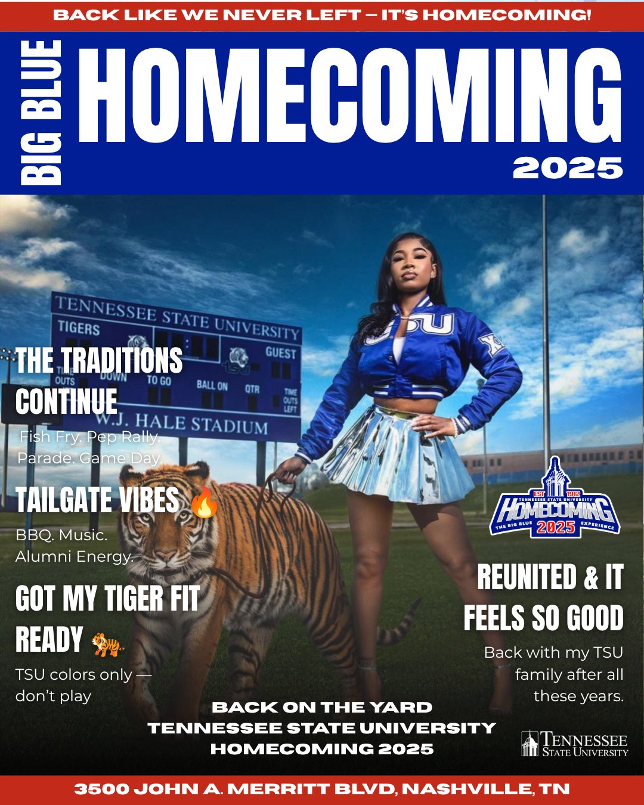
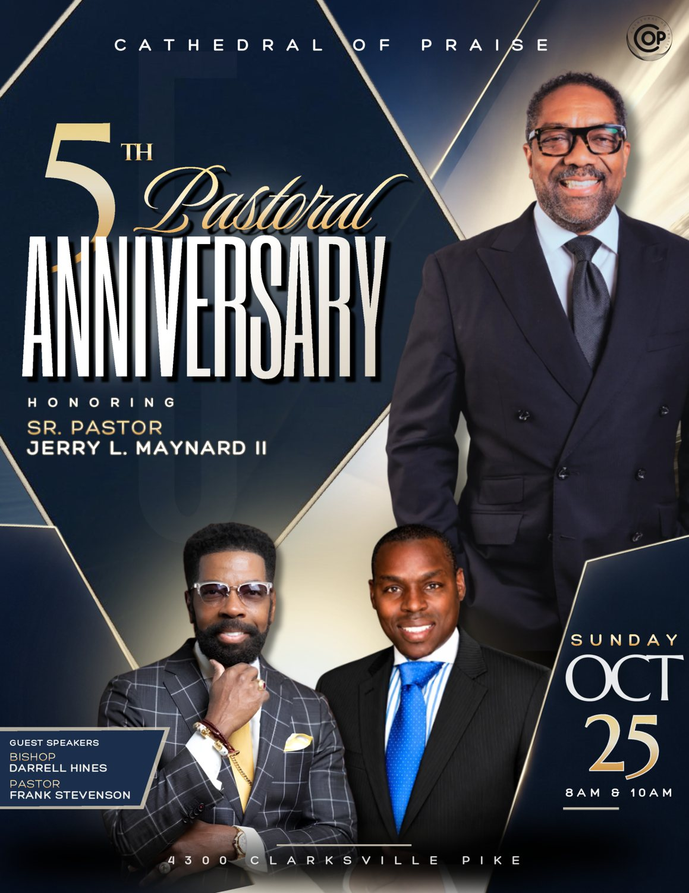
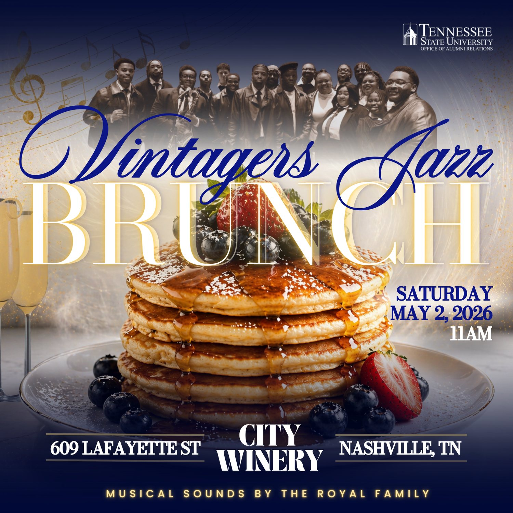
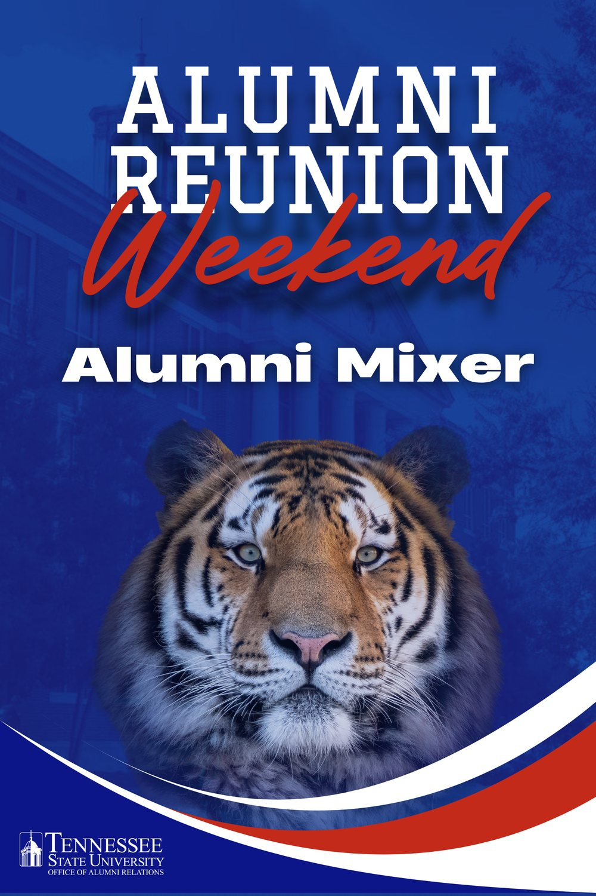
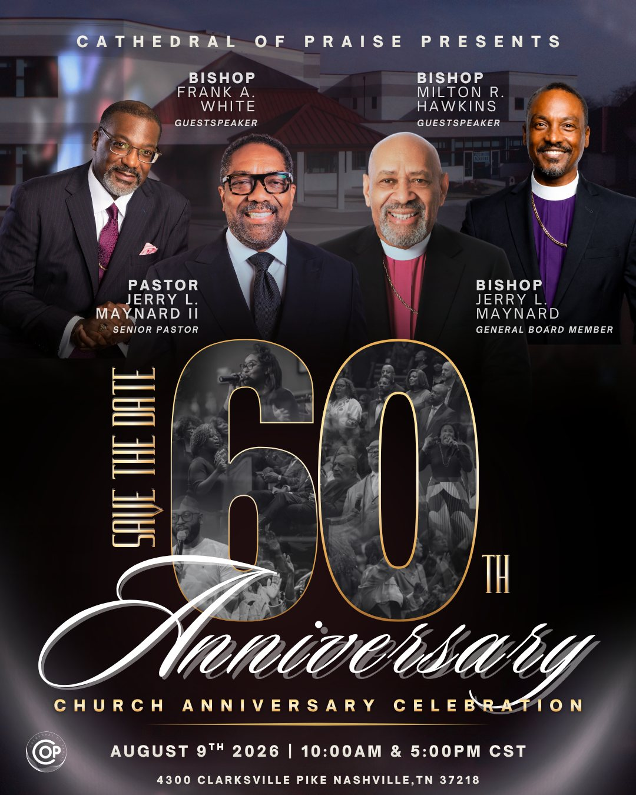
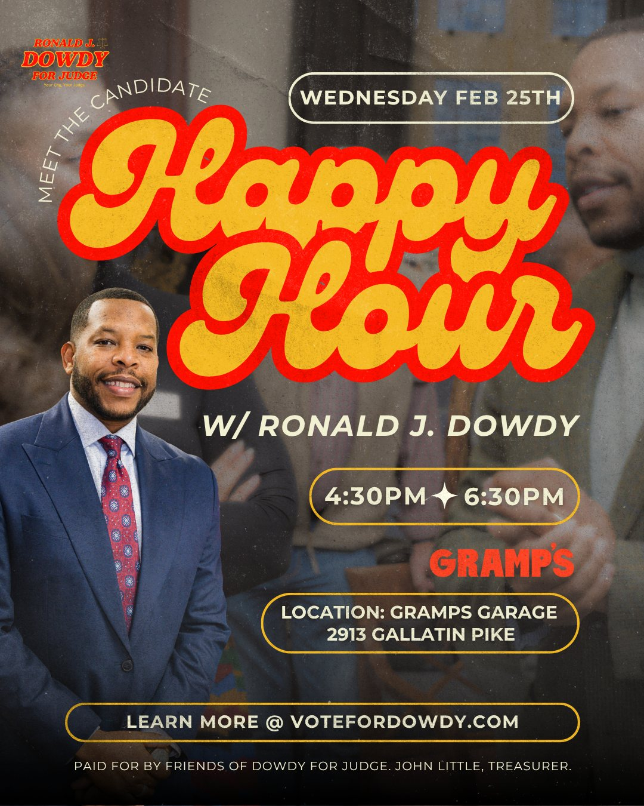
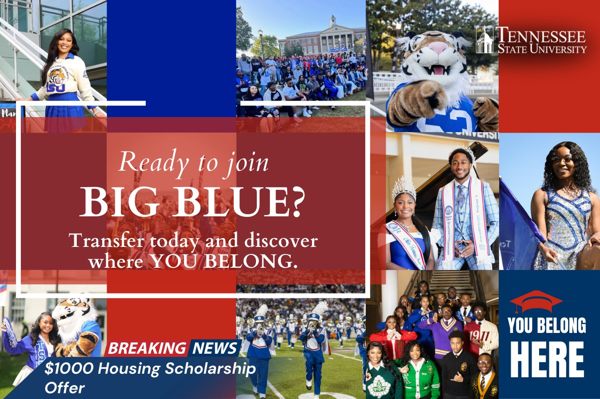
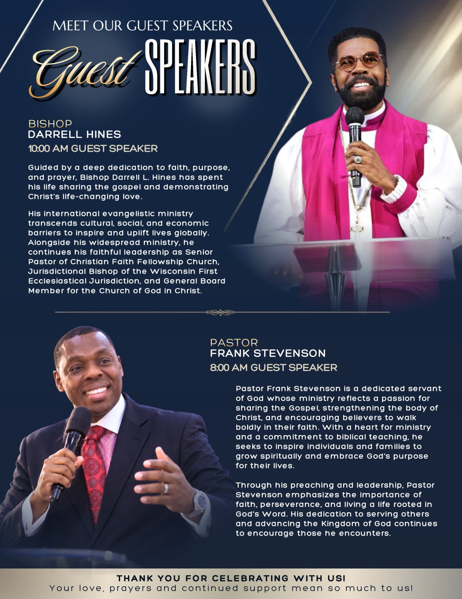

Event graphics& printed programs. Designed in Nashville.
Your attendees judge an event by what they hold and what they walk past: the program, the badge, the sign that tells them where Hall C is. Leo Operations designs the full visual system for conferences, galas, conventions and church events, then prepares it for print or manages the printing and delivery for you.
What we design
Printed programs and agendas, pamphlets and tri-folds, one-sheets, sponsor boards and logo walls, directional and room signage, step-and-repeat banners, stage screen graphics, name badges and lanyards, tickets and invitations, save-the-dates, and the social graphics that promote the event before, during and after.
Work you can see
Our design studio is led by Partner and Creative Director Morganne Norwood. Recent pieces include anniversary programs and a 60th anniversary save-the-date for Cathedral of Praise in Nashville, a Homecoming 2025 campaign and a full magazine for Tennessee State University, a yearbook for Invictus Nashville, reunion posters, admissions postcards and event key art for galas and brunches.
Design to delivery
We build files to your printer's exact spec, with bleed, safe zones and the right color profile, or we coordinate production with a Nashville printer and get the boxes to your venue's loading dock on time. For Music City Center events, we schedule delivery with your general contractor so signage is in place at load-in.
One look for the whole event
Because the same team photographs and films events, your program, signage, stage screens and recap video share one brand, and the photos show your signage the way it was meant to look.
Everythingyou need.
Designed byour studio.








Questions, answered.
Do you print event programs and signage?
We design them and either deliver print-ready files or manage the printing with a Nashville printer and delivery to your venue.
Can you design a conference program with sponsor pages?
Yes. We lay out agendas, speaker bios, maps, sponsor pages and ads, and we can produce a matching digital version for your event app or website.
Can you design our step-and-repeat banner?
Yes. We design step-and-repeats and logo walls sized for your venue, and we photograph your guests in front of them if you book coverage.
How early should we start event design?
Start six to eight weeks before the event for programs and signage, earlier if sponsors need to approve their placements. Rush timelines are possible when content is final.
Do you design for church events?
Yes. We design anniversary programs, save-the-dates, service graphics and visitor cards for churches in Nashville.
How do we start?
Email us or call (773) 573-2135 with the event, the date, what pieces you need and your quantities.
Let’s make itunforgettable.
Tell us the date, the place and what you need. We will tell you how we would cover it.
Email Leo Operations →